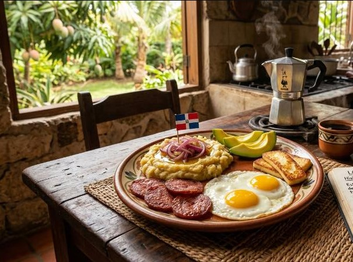

Mangu con los 3 golpes

Description
The ultimate Dominican breakfast is Mangú con Los Tres Golpes. This iconic, hearty meal consists of creamy mashed green plantains (mangú) topped with sautéed red onions and served with "the three hits": fried salami, fried cheese, and fried eggs.
Ingredients
For the Mangú:
- 4 green plantains (must be green and unripe)
- 2 tbsp butter
- 1/2 tsp salt (plus more for boiling)
- 1/2 to 1 cup cold water and reserved boiling water
For the Onions (Encebollado):
- 1 large red onion, thinly sliced
- 2 tbsp apple cider or white vinegar
- 1 tbsp olive oil
Los Tres Golpes (The Three Hits):
- Salami: Dominican-style salami (thick-cut rounds)
- Cheese: Queso de Freír (frying cheese) or halloumi
- Eggs: 4–6 eggs (fried sunny-side-up is traditional)
Steps
- Boil the Plantains: Peel the plantains and cut them into quarters. Place them in a pot of salted boiling water and cook for about 20–25 minutes until fork-tender.
- Pickle the Onions: While the plantains boil, soak the sliced onions in vinegar and a pinch of salt for 10 minutes. Sauté them in a skillet with olive oil until they are soft and translucent.
- Mash the Mangú: Drain the plantains (reserve some of the hot water). Immediately mash them with butter. Gradually add small splashes of water (cold or reserved) while mashing until the consistency is silky and smooth.
- Fry the "Golpes": fry slices of the Cheese and the Salami until golden and crispy on both sides. Finally, fry the eggs to your liking (traditionally with crispy, lacy edges).
- Assemble: Scoop the mangú onto plates, top with the sautéed onions, and arrange the fried cheese, salami, and eggs on the side.
Pro tips
Cold Water Secret: Many Dominican cooks add a splash of cold water while mashing; this helps keep the mangú soft and prevents it from getting hard as it cools.
Authenticity: For a complete feast, serve with fresh avocado slices and a glass of Morir Soñando (a traditional orange and milk drink).
Home